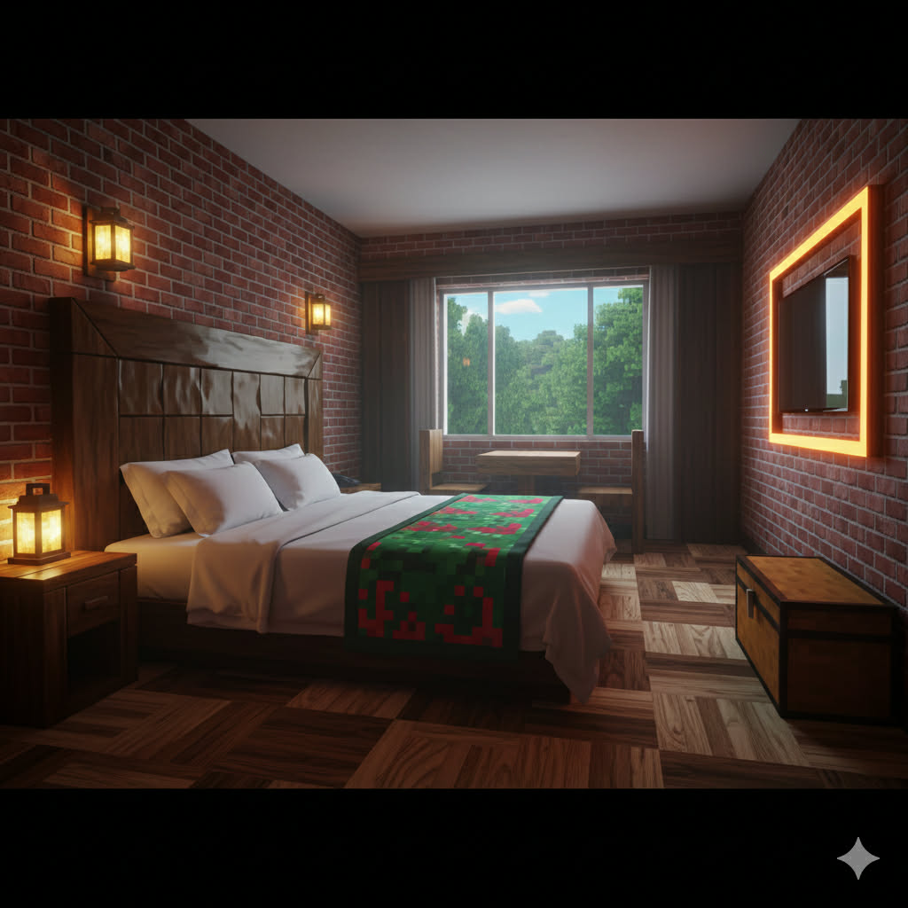

Room perfect for 2 people
The Noob Room is designed for beginners who want a simple and cozy Minecraft hotel experience. It provides the essential comfort needed after a long day of mining, crafting, or exploring. This room is ideal for two guests, making it perfect for friends starting their journey together. Its welcoming atmosphere helps new players feel at ease while learning the basics of survival. With its simplicity and charm, the Noob Room ensures a relaxing and beginner-friendly stay.